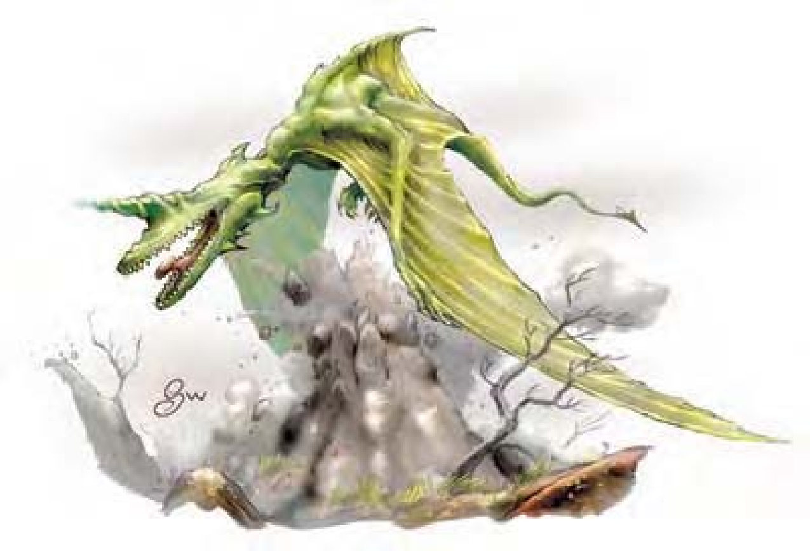

| 生命骰： | 12d10+36（102HP） |
| 先攻： | +6 |
| 速度： | 20英尺（4格），飞行60英尺（普通） |
| 防御等级： | 18（-2体型，+2敏捷，+8天生），接触10，措手不及16 |
| 基本攻击/擒抱： | +12/+25 |
| 攻击： | 啮咬+15近战（2d8+5）或音波枪+12远程接触（6d6） |
| 全力攻击： | 啮咬+15近战（2d8+5）以及2爪抓+13近战（1d6+2）；或音波束+12远程接触（6d6） |
| 占据/触及： | 15英尺/10英尺 |
| 特殊攻击： | 音波枪，爆破 |
| 特殊能力： | 盲视120英尺，免疫，对音波易伤 |
| 豁免检定： | 强韧+11，反射+10，意志+5 |
| 属性： | 力量20，敏捷14，体质17，智力7，感知13，魅力11 |
| 技能： | 聆听+12，潜行+10 |
| 专长： | 坚忍，飞越攻击，精通先攻，多重攻击，攫取 |
| 区域： | 温带山脉 |
| 组织： | 单独或成群（2-4） |
| 挑战等级： | 9 |
| 宝物： | 无 |
| 阵营： | 时常中立 |
| 进化： | 13-16HD（超大型）：17-36HD（巨型） |
| 等级调整： | - |
这种生物看起来像是一类没有眼睛且呈黄绿色的飞行爬行生物，，生有肉质的翅膀、一条长尾、以及一块长在背上的巨大鳍片。形似鳄鱼的头上长有一处独立的角状突起。
作为一名来自荒原废土地带的奇异掠食者，角翼魔兽就像一头永远饥饿的巨龙一般持续恐吓着其所栖息的地区。
角翼魔兽没有视觉，依靠舌头上的一个特殊器官来接收四周的声音和动静，头上的角则可以聚焦释放强力的声波光束。这种生物呈现出一种黄绿相间的颜色，翅膀和鳍片偏黄，而头部和躯干偏绿，牙齿则呈黄色。
角翼魔兽生性狡猾而且刁钻，虽然是杂食性但偏好肉类。它们会在偏僻的山峰高处筑巢，觅食时甚至会长途跋涉数天，偶而才会返回巢穴。角翼魔兽有时会在离地100英尺以上的高空巡梭以搜寻猎物。
角翼魔兽长约20英尺，翼展40英尺，重约5000磅。
虽然具有智慧，但角翼魔兽不会说话。
战斗角翼魔兽偏好在空中战斗，以音波对地面来回攻击或攫取猎物然后再从空中扔下来（最后落地吞食那些散落一地的残渣）。
音波枪Sonic Lance（Su）：每2轮一次，角翼魔兽能将音波能量聚焦成一条距离可达60英尺的射线发出。这一能力属于远程接触攻击，会对单一目标造成6d6点伤害。
爆破Explosion（Su）：角翼魔兽可以将其音波枪射向地面、巨石、石墙、或是其他类似的目标，以此引发一阵饱含碎散飞石的剧烈爆破。这一攻击将会对效应中心四周10英尺范围之内的生物造成2d6点穿刺伤害。
施展这一能力将被视作使用音波枪，因此每2轮才可使用一次，且绝不会在一次音波枪攻击后的下一轮施展。
盲视Blindsight（Ex）：角翼魔兽可以察觉120英尺范围之内所有敌人。超出这一范围则被视作目盲。角翼魔兽对凝视攻击、诸如幻术系效应一类的视觉效应、以及其他依赖视觉产生效果的攻击形式免疫。
角翼魔兽在其听觉受损时将被视作目盲，所有敌人对其都具有完全隐蔽。
免疫Immunities：角翼魔兽对凝视攻击、视觉效应、幻术系效应、以及其他依赖视觉产生效果效果的攻击形式免疫。
技能：角翼魔兽在进行聆听检定时具有+4种族加值。